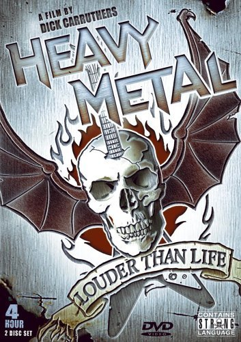

¿Que es el metal?
El heavy metal (literalmente en español metal pesado) es un conocido género musical, derivado del rock and roll, el cual posee elementos esenciales del mismo,al igual que de la música blues (en sus inicios), del rock psicodélico y de la música clásica, sin mencionar la influencia esencial recogida del hard rock desdesus inicios. El origen del heavy metal como género musical, bien se puede colocar a finales de los años 1960, con la influencia de muchos grupos de la época, los cuales ampliaron su sonido hacia sonidos más potentes, desarrollándose mucho más ampliamente durante los años 1970 y ganando una gran y alta popularidad durante los años 1980. Se caracteriza principalmente por poseer ritmos potentes, crudos, rudos y agresivos, logrados mediante la utilización de guitarras distorsionadas con estilo propio, baterías con doble pedales, y bajos eléctricos pronunciados (lo cual le da la atmósfera característica de éste peculiar género musical, muchas veces violenta y oscura).
Un poco de su historia
La música blues estadounidense tuvo una gran influencia en los primeros grupos de rock británicos. Grupos como The Rolling Stones y The Yardbirds grabaron versiones de muchas canciones clásicas de blues usando guitarras eléctricas, donde muchas de las originales usaban acústicas, y, además, a veces subían el tempo (adaptaciones similares del blues y de otros géneros afroamericanos de música formaron la base del primer rock and roll, de manera especial el de Elvis Presley). Como consecuencia de este experimento musical, las bandas británicas basadas en el blues desarrollaron lo que se convirtió en el sello del heavy metal: esencialmente un género de guitarras distorsionadas y sonidos altos, construidos alrededor de poderosos acordes The Kinks tuvieron un importante papel en popularizar este nuevo sonido con su éxito You Really Got Me en 1964.

¿Por que el nombre del metal?
Definitivamente los metaleros nos hemos hecho esta pregunta varias veces, de el porqué se llama metal a nuestro género musical favorito. Algunos aludiremos el vestirnos muchas veces con cadenas o puntas de metal, pero para el historiador musical y especialista en el metal Ian Christe, nada tiene que ver con la manera de vestir de los metaleros, si no que posiblemente su definición provenga de un lenguaje hippie. La palabra Heavy significaría potente o profundo y la palabra metal describiría a un estado de ánimo como la pesadez o fastidio.
El escritor William Burroughs ,en el año de 1961, fue el primero en añadir en dos de sus obras (Nova Soft Machine y Nova Express)el término heavy metal .
Aunque el nombre METAL, no se sabe a ciencia cierta de dónde proviene, creo que que este género no pudo tener mejor nombre, ya que dicha palabra alude a cierta fuerza y energía única que solo tienes los metaleros.
Bandas pioneras en el metal
Black sabath
Megdeaht
Metallica
Iron Maiden
led zeppelin